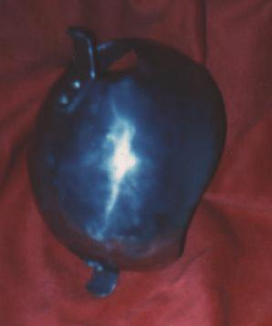

Cup Hilt (SCA Sport Hilt)

Cup Hilt (SCA Sport Hilt):
16 ga. 304 Stainless Steel
Finished 1994 (Shown) Have made around 20 or so since.
Patterns
[Back to Main Page]
Copyright 1999 Craig W. Nadler All rights reserved